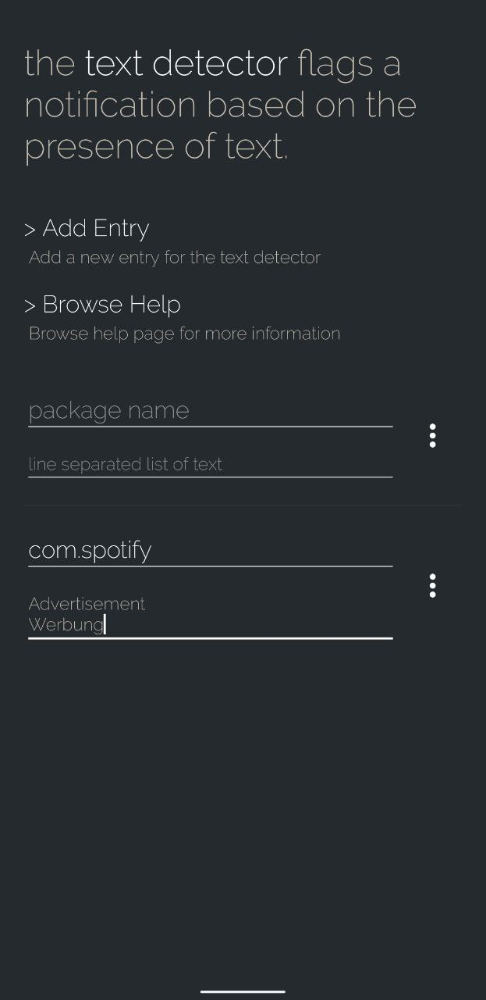
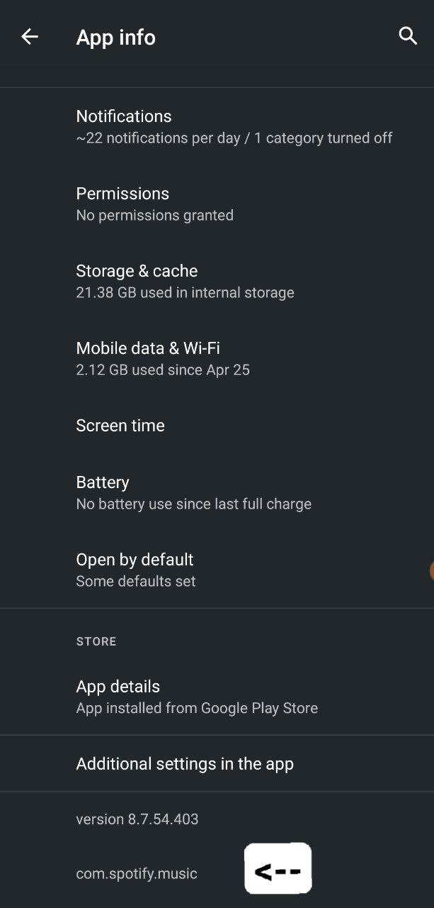

Troubleshooting ad-free
Table of Contents
1. About
This page describes common steps how to troubleshoot ad-free in case ad blocking does not work.
- Pictures below are based on version v2.0. They may slightly change in later versions.
- Landing page: https://adfree.abertschi.ch
- Sourcecode: https://github.com/abertschi/ad-free
2. Reinstall ad-free
Remove and reinstall ad-free. Upon first usage you are asked to grant notification access. Whether the notification service successfully connected can be seen in settings (three dots in about fragment) in the version segment. You can touch the notification service is connected / notification service is disconnected text to launch notification access settings to re-grant access.

Figure 1: Notification service status
3. Enable autostart
Some flavors of Android support an autostart option. Go to Android app info and enable auto start.

Figure 2: App info activity
4. Disable battery saver
Remove ad-free from the list of battery saved apps. This option can be found in Android app info.

Figure 3: Battery saver options
5. Enable always-on notifications
On some flavors of Android ad-free is being killed if the activity runs in background. Go to ad-free settings (three dots in about fragment) and enable always-on option. A foreground notification should now appear in the notification drawer. This notification appears as soon as the notification listener is connected an running.

Figure 4: Always On Notification
6. Avoiding false-positives
A false-positive may be resolved with a new ad-detector. You can try to screenshot the Spotify notification which caused the false-positive and file an issue on Github.
Alternatively, we recommend to disable non-playback related notifications in the Android app settings for Spotify.

Figure 5: Disable non-playback related notifications
7. Ad-Detectors
7.1. Generic Text Detector (experimental)
The generic text detector flags a notification based on the presence of some user defined text.

Figure 6: UI of generic text detector
With Add Entry, a new entry is created. The package name corresponds to the name of the android package of the music player. The package name is typically found in the App Info activity of the Home screen launcher. Everything containing the entered package name will trigger the detector.

Figure 7: Find out package name of music player
The second text field contains a list of line-separated strings, which are matched against the notification. The example in the image above will match every text found in the notification of packages containing com.spotify which contain either Advertisement or Werbung.
If you found new matching rules, please share it for others in the issue https://github.com/abertschi/ad-free/issues/83.
8. Advanced steps
8.1. Enable Developer Mode
Ad-free supports a developer mode to test experimental features. Enable developer mode in ad-free by clicking multiple times on the title in the ad detectors screen. Go to ad-free settings (three dots) / ad detectors.

Figure 8: Enable developer mode
8.2. Check if notification listener works
Enable developer mode in ad-free by clicking multiple times on the title in the ad detectors screen. Go to ad-free settings (three dots) / ad detectors. Enable the detector Dummy global which flags each incoming notification as advertisement. If audio is not being blocked then there is an issue with the notification listener. File an issue on Github; https://github.com/abertschi/ad-free/issues.
8.3. Record notifications for a new detector.
Unlock developer mode as described above. Enable Spotify tracer and submit the recording file as an issue on Github. The notification dump can help adding support for new devices.
9. Miscellaneous
9.1. Issues with Bluetooth Headphones
See https://github.com/abertschi/ad-free/issues/64 for troubleshooting steps.